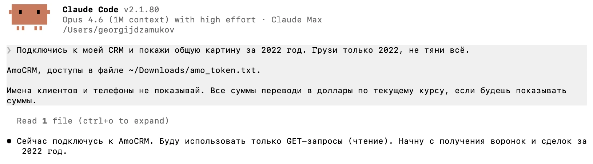
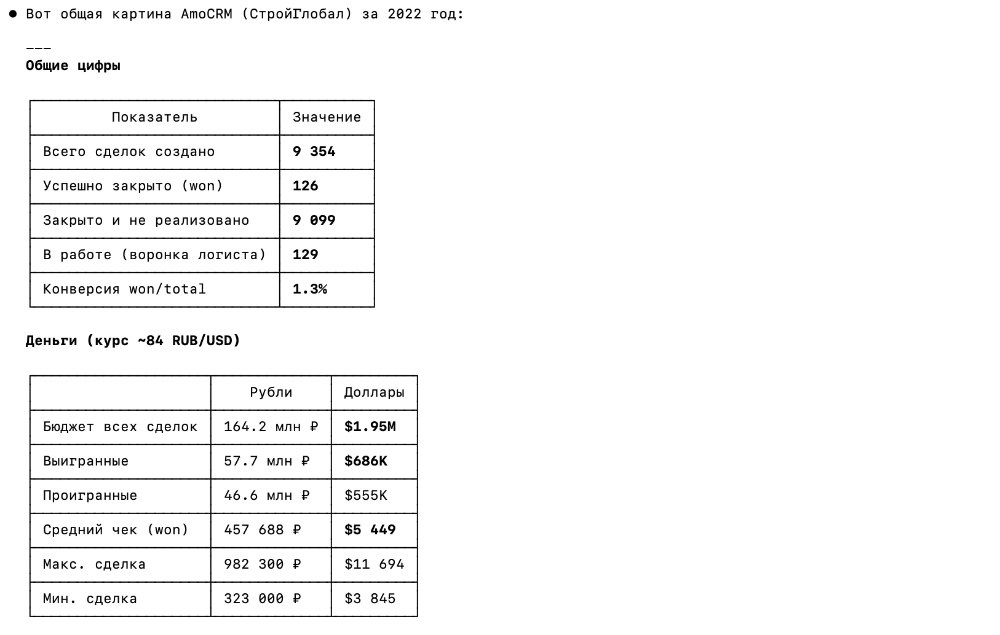
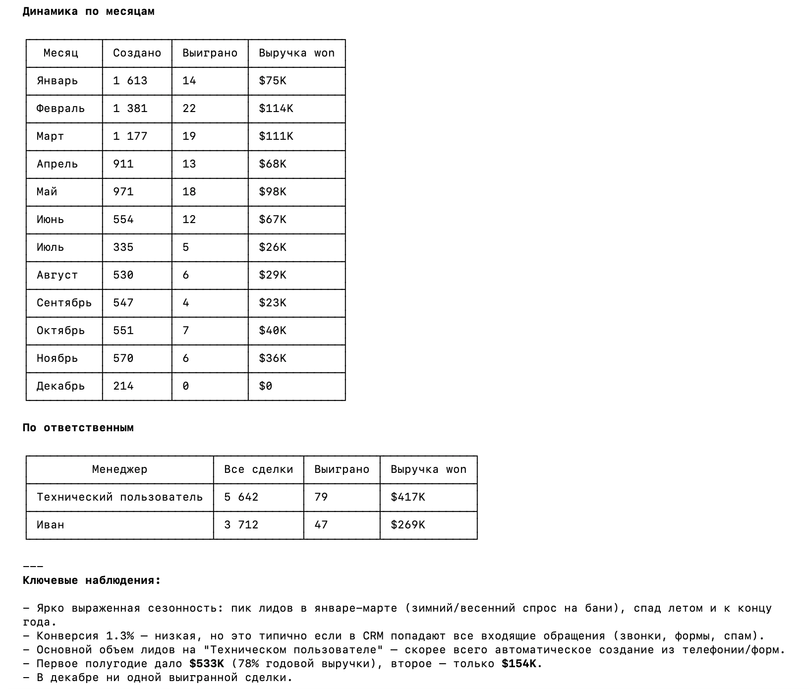
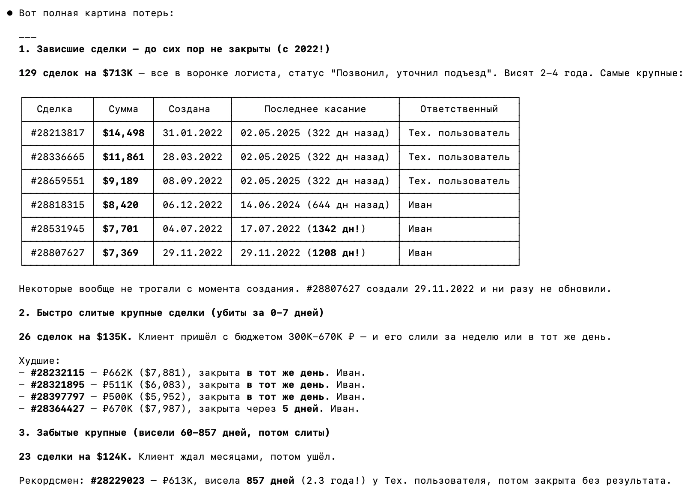
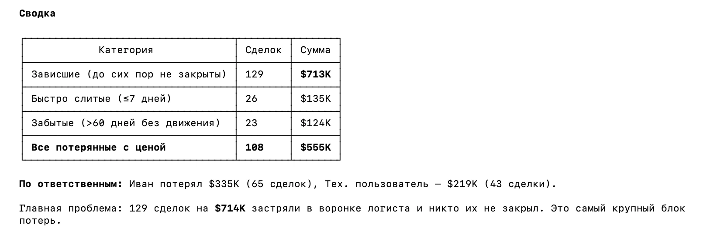
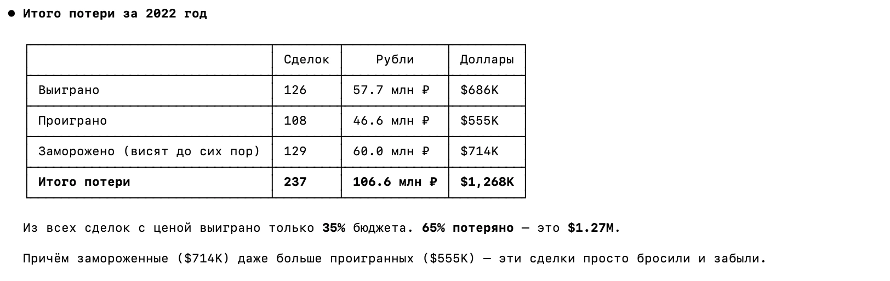

Подключил AI к своей CRM и нашёл $1M потерь за один год
Сперва я подключил AI к CRM двух компаний и нашёл тысячи и десятки тысяч долларов потерь. Клиенты приходили, оставляли заявку, и про них просто забывали. Отдал отчёты собственникам, помог вернуть часть клиентов.
Потом решил проверить свою компанию. Чтобы показать вам все цифры и промпты как они есть.
У меня строительная компания, 11 лет на рынке. Ведём AmoCRM всё это время. Десятки тысяч карточек, но картина в целом не ясна. CRM заполняется через раз. У вас, наверное, тоже. Вопрос: какие потери мы несём из-за этого.
Три промпта на человеческом языке
Открываю Claude Code и пишу человеческим языком:
Подключись к моей CRM и покажи общую картину за 2022 год.
Грузи только 2022, не тяни всё.
AmoCRM, доступы в файле ~/Downloads/amo_token.txt.
Имена клиентов и телефоны не показывай.
Все суммы переводи в доллары по текущему курсу, если будешь показывать суммы.
Найдено: 9 354 сделки, конверсия 1.3%
Claude Code вытащил всю информацию из CRM, структурировал и выдал результат в понятном формате. Он пишет, что создано 9 354 сделки. 126 закрыто. 9 099 не реализовано. 129 в работе в воронке логиста. Конверсия 1.3%. Кажется мало, но в CRM попадает всё: звонки, формы, спам.
Бюджет всех сделок $1.95M. Выигранных $686K. Проигранных $555K. Средний чек $5 449.

Ярко выраженная сезонность: пик лидов в январе–марте, спад летом и к концу года. Первое полугодие дало $533K, 78% годовой выручки. Декабрь пустой.

Нейросеть разложила весь год в понятные таблицы и сделала выводы на основании этих данных.
Пишу ей второй промпт:
Окей, это статистика. Найди мне клиентов, про которых забыли.
Тех, кого не трогали больше месяца. Найди максимальные потери.Найдено: 129 забытых сделок на $714K
Нейросеть отвечает и делит потери на три категории.
Зависшие сделки. 129 штук на $713K до сих пор не закрыты. Статус: «Позвонил, уточнил подъезд» — это подъезд к участку для строительства. Висят от 2 до 4 лет. Это сделки в воронке логиста, и никто их не тронул.
Быстро слитые. 26 сделок на $135K. Клиент пришёл с бюджетом 300K–670K₽, и его слили за неделю или в тот же день. Три крупных сделки убиты в тот же день, четвёртая за пять дней.
Забытые крупные. 23 сделки на $124K. Висели от 60 до 857 дней, потом просто закрыли. Рекордсмен — сделка на 613K₽, висела 857 дней, 2.3 года. Про клиента забыли на два с лишним года.
Посмотрите какой развёрнутый ответ выдаёт нейронка:


129 сделок на $714K застряли в воронке логиста, и никто их не закрывал.
Это самый крупный блок потерь.
Итого потерь: $1.27M за год
Пишу третий промпт:
Посчитай, сколько денег всего мы потеряли. Замороженные, проигранные,
все сделки, где есть цена. Только за 2022 год.
Из таблицы видно, что выиграно сделок на $686K. Проиграно на $555K. Заморожено на $714K, которые висят до сих пор.
Итоговые потери составили $1.27M. Из всех сделок с ценой выиграно только 35%. 65% потеряно. Причём замороженных даже больше, чем проигранных. Эти сделки просто бросили и забыли.
Вот что AI нашёл в моей CRM, в которой полный бардак.
$1.27M потерь за один год. 237 сделок. 65% бюджета потеряно. Я посмотрел один год. Проблема длится все одиннадцать лет.
CRM-данных мало. Звонки дают больше
В CRM менеджеры двигают карточки из колонки в колонку, что-то заполняют, что-то нет. На основе этого сложно сделать точный вывод.
Со звонками иначе. Это реальный диалог. AI находит конкретные строчки, где клиент хочет заказать, а менеджер его сливает. В предыдущей статье я дал AI тысячу реальных звонков этих же менеджеров. Там нашлись проблемы, которые CRM-данные не покажут.
Но даже разовый анализ звонков не решает проблему. Менеджеры не заполняют CRM. Никакие регламенты не работают. Я 11 лет пытался. РОП у меня был. Но он не может слушать десятки звонков в день и проверять каждую карточку. Нужен контролёр, который слушает, смотрит переписки, проверяет CRM. Но и он до конца не справится, да и выгорит быстро.
Но теперь есть AI. Он может в реальном времени слушать каждый звонок, читать каждую переписку, просматривать все карточки. По каждому лиду видно, что происходит прямо сейчас. Менеджер сказал что-то не то, дал клиенту недостоверную информацию или происходит откровенная дичь — руководитель узнает мгновенно. Ни один РОП так не сможет.
Фактически у нас с вами теперь есть возможность установить тотальный контроль над отделом продаж: над каждой перепиской и над каждым произнесённым словом каждого менеджера.
Хотите узнать, сколько забытых сделок в вашей CRM?
Напишите — подключу AI и покажу.
Написать в Telegram